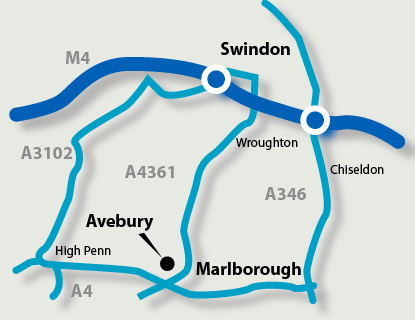

Please call or email with any inquiries you may have.We will reply to all emails received.
It has been noted over the years however
that email is less than 100% reliable so if you receive no reply,try again or better still telephone.
01672 512879 or 07813394167
email
eccdavid.h@gmail.com
We are situated near Marlborough at the foot of the Wiltshire Downs, 8 miles
from the M4 jnc 16,Swindon.
